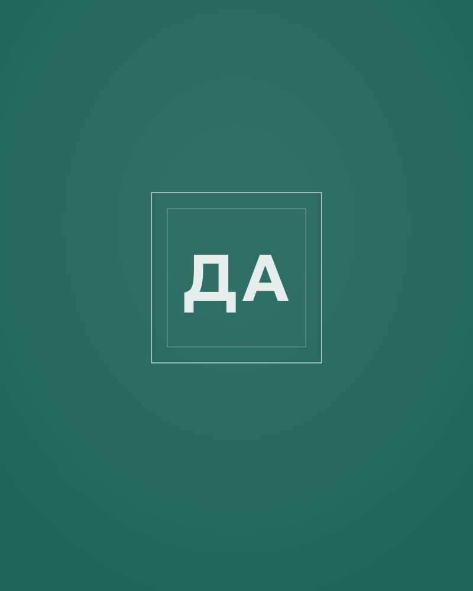

Санкт-Петербург
Офис: наб. реки Мойки, д. 42. Встречи по записи, выезд к клиенту, онлайн-консультации.

Арбитражные споры, взыскание задолженности, семейные дела и раздел имущества. Стаж — более 22 лет.
Представляю интересы клиентов в арбитражных судах — от претензии до заседаний.
Позиция по делу, процессуальные документы, участие в заседаниях.
Споры о задолженности по договорам.
Составление претензий и ответов на них. Для споров о взыскании денег претензионный порядок, как правило, обязателен до обращения в арбитражный суд.
Гражданские дела о взыскании долгов: в суде общей юрисдикции и на стадии исполнения.
Требование должнику, исковое заявление, расчёт задолженности.
Подготовка документов и участие в заседаниях.
Сопровождение исполнительного производства, жалобы на бездействие судебных приставов.
Раздел имущества, алименты и наследство. Всё, что вы расскажете, защищено адвокатской тайной.
Раздел совместно нажитого имущества — соглашением или через суд.
Взыскание алиментов и задолженности по алиментам, жалобы на бездействие приставов.
Вступление в наследство, вопросы по завещанию.
22+
года практики
Арбитражные, гражданские и семейные дела в Санкт-Петербурге и Великом Новгороде.
Офисы в обоих городах. Представительство в арбитражных судах и судах общей юрисдикции.
Офис: наб. реки Мойки, д. 42. Встречи по записи, выезд к клиенту, онлайн-консультации.
Офис: ул. Большая Санкт-Петербургская, д. 56, оф. 6.
Арбитражный суд Новгородской области — 5 дел:
Всего 13 дел по данным открытых судебных реестров. Список может быть неполным.
Профиль на HARANT (откроется в новой вкладке)Убеждён, что сила — в правде, за которую стоит бороться.
Я адвокат Адвокатской палаты города Санкт-Петербурга, стаж — более 22 лет. Специализируюсь на гражданском и семейном праве, веду арбитражные споры. Представлял интересы клиентов в арбитражных судах и судах общей юрисдикции.
Работаю в Санкт-Петербурге и Великом Новгороде, в каждом городе есть офис. Встречаюсь с клиентами по записи, при необходимости выезжаю сам или консультирую онлайн. Работаю по договору.
1988–1998 — служба в МВД (Латвия, затем Россия) 1993 — Академия полиции, Москва, практическая юриспруденция
наб. реки Мойки, д. 42
Открыть в Яндекс Картах: Санкт-Петербург, набережная реки Мойки, 42 (откроется в новой вкладке)
ул. Большая Санкт-Петербургская, д. 56, оф. 6
наб. реки Мойки, д. 42
Открыть в Яндекс Картах (откроется в новой вкладке)Встреча в офисе — по предварительной записи